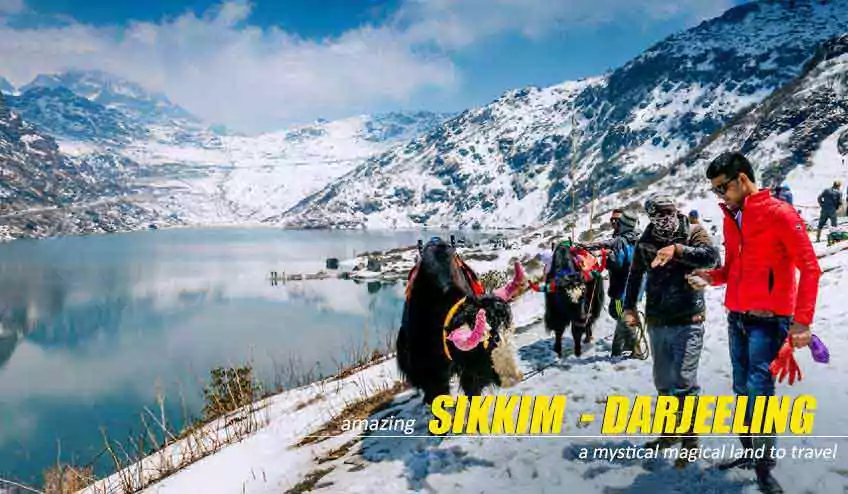
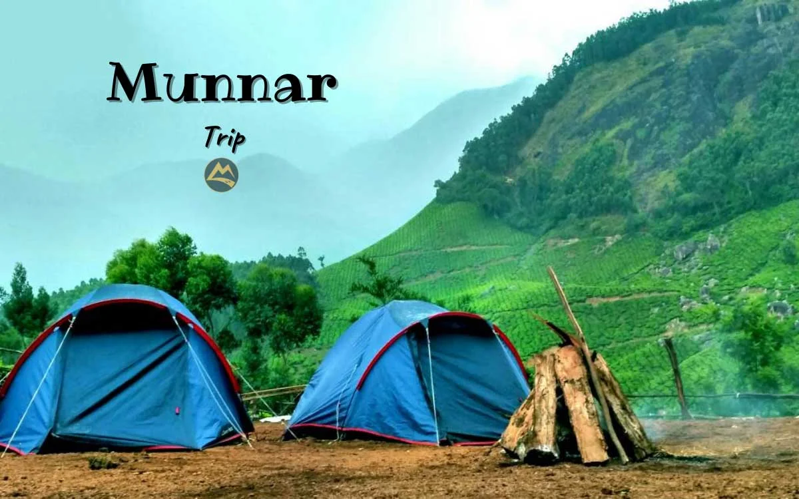

Shimla and Manali
Shimla and Manali are premier hill stations in Himachal Pradesh, offering contrasting experiences: Shimla, the state capital and former British summer capital, features colonial charm, the Ridge, and bustling Mall Road at $\sim$2,200m. Manali, nestled in the higher Kullu Valley at $\sim$2,050m, is a hub for adventure sports, snow-capped peaks, and backpacker culture

Sikkim and Darjeeling
Sikkim and Darjeeling, located in the Eastern Himalayas, are premier Indian travel destinations known for stunning views of Mt. Kanchenjunga, vibrant tea gardens, and rich Buddhist culture. Sikkim, an organic state with alpine lakes, and Darjeeling, famous for colonial charm and tea, offer adventure, scenic beauty, and unique cuisine, best visited March–June and October–December.

Munnar
Munnar is a renowned hill station in Kerala’s Idukki district, famed for its vast tea plantations, misty hills, and, waterfalls. Situated at the confluence of three rivers, this former British summer resort offers a cool climate, making it ideal for visiting between October and February. Top attractions include Eravikulam National Park and the Tea Museum